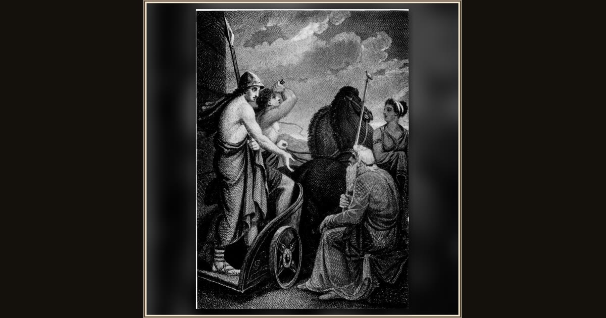

Telemachus Departing from Nestor
Henry Howard · 1808 · Wikimedia Commons
Telemachus stands in the car of a chariot, spear upright and one spoked wheel catching the light, while bearded Nestor sees him off. The driver is the point Homer insists on: Nestor sends his own son Pisistratus to steer Telemachus overland to Sparta at the cl